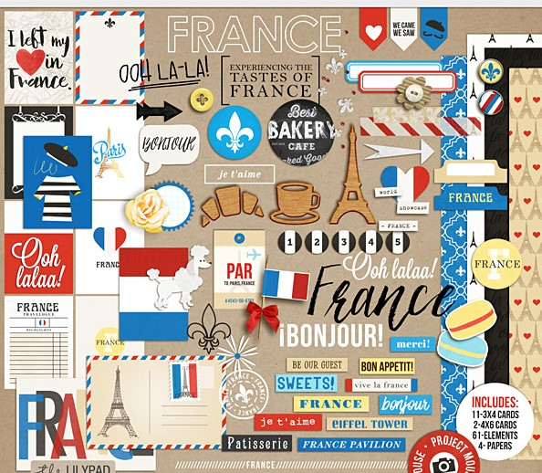
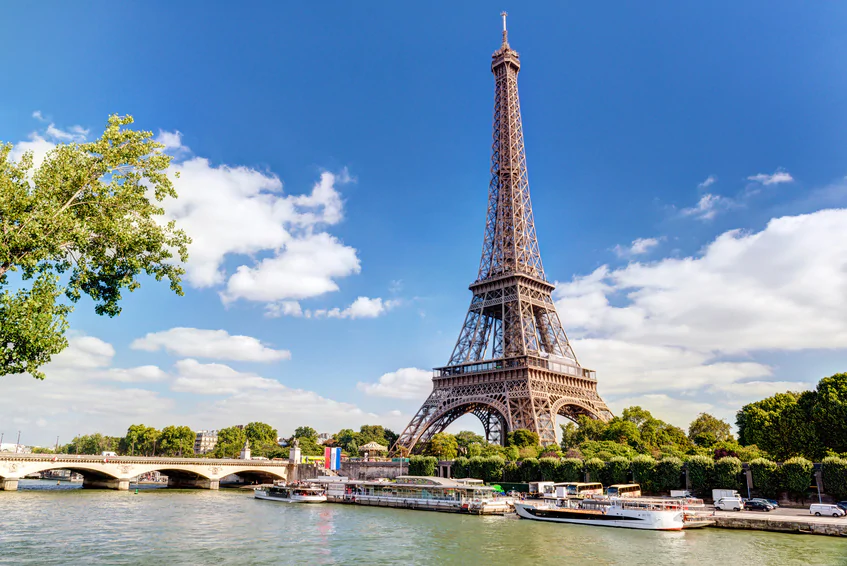
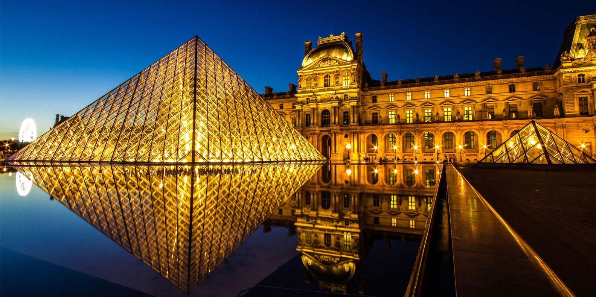
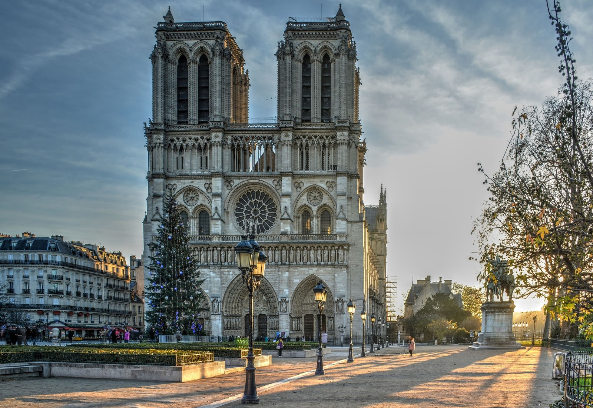

explore FRANCE!
There isn’t a single traveler in the world that can resist the lure of France and for good reason! With famous authors,
poets, painters, musicians and philosophers calling this country home, France is known for being inclined towards the arts.
This, coupled with the sheer beauty this country has to offer, makes France one of the top destinations to visit, no matter
what kind of travel experience you want to live through.France seduces travellers with its unfalteringly familiar culture,
woven around cafe terraces, village-square markets and lace-curtained bistros with their plat du jour (dish of the day)
chalked on the board.

With thoughts of your next holiday already filling your mind with ideas, it’s time to find out why France is the perfect
destination to travel to.
Say Bonjour when in France! The first welcoming word that a visitor comes across as French love to speak their native
language. Be stylish when walking down the streets of France, remember, the country is home to many stylish and chic
people.
Cities:
France has numerous cities of interest to travellers, below is a list of nine of the most notable:
•Paris — the "City of Light", romance and the Eiffel Tower
•Bordeaux — city of wine, traditional stone mansions and smart terraces
•Bourges — gardens, canals and a cathedral listed as a UNESCO heritage site
•Lille — a dynamic northern city known for its handsome centre and active cultural life
•Lyon — France's second city with a history from Roman times to the Resistance
•Marseille — Third largest French city with a harbour as big as its place as the heart of Provence
•Nantes — the "Greenest City" and, according to some, the best place to live in Europe
•Strasbourg — famous for its historical centre, and home to many European institutions
•Toulouse — the "Pink City", for its distinctive brick architecture, main city of Occitania
The capital of France 'PARIS' : city of lights
Oh Paris!
You can’t describe Paris unless you have wandered around the streets under the rain at night.You can’t
describe Paris until you walk in a sunny park very early in the morning.You can’t describe Paris if you
haven’t felt the atmosphere at les Quais de Seine, a Friday night after a full week of work.You can’t
describe Paris when you go to your favorite terrasse on Sunday afternoon with your friends.You can’t
even begin to describe Paris because you will have very different feelings depending whether you are at
the grueling Republique/Oberkampf, the stylish Montparnasse/Saint-Germain, the magic Saint-Michel/Odeon,
the classy Porte Maillot/Porte d’Auteuil or more familial Beaugrenelle.
PARIS should not be described, it should be felt!!
1. Eiffel Tower

If you are in Paris, then you simply cannot miss visiting this world-famous landmark. There are numerous packages available to visit the Eiffel Tower, but skip-the-line entry ticket is the most comfortable source. This ticket offers you a host along with commentary. Visitors are allowed to explore the first and second levels of the tower at their own speed. You will be mesmerised by the lovely view of Notre Dame, Les Invalides and Cathedral from the Eiffel Tower. This is a romantic destination which is perfect to be visited with your loved one. Do try and get the sunset view from the Eiffel Tower which is quite amazing.
2. Disneyland Paris
 A tourist attraction that must be a part of your itinerary, especially if traveling with kids, is Disneyland® Paris. The entertaining theme park is divided into two different theme parks namely- Disney® Parks and Walt Disney Studios® Park. Other than enjoying rides and living the mystical life of Disney with your favorite cartoon characters, the premises also has several resorts, a shopping complex, and a dining and entertainment complex. When visiting this park, make sure you plan to stay a day or two at one of the resorts at Disneyland® Paris that will make your travel experience a step higher and leave you feeling delighted and reliving some of your most memorable childhood experiences.
A tourist attraction that must be a part of your itinerary, especially if traveling with kids, is Disneyland® Paris. The entertaining theme park is divided into two different theme parks namely- Disney® Parks and Walt Disney Studios® Park. Other than enjoying rides and living the mystical life of Disney with your favorite cartoon characters, the premises also has several resorts, a shopping complex, and a dining and entertainment complex. When visiting this park, make sure you plan to stay a day or two at one of the resorts at Disneyland® Paris that will make your travel experience a step higher and leave you feeling delighted and reliving some of your most memorable childhood experiences.
3. Musée du Louvre

Holding tens of thousands of works of art–from Mesopotamian, Egyptian and Greek antiquities to masterpieces by artists such as da Vinci (including his incomparable Mona Lisa), Michelangelo and Rembrandt–it’s no surprise that this is one of the world’s most visited museums.
The Louvre contains works of art and artisanship from all over Europe as well as priceless collections of antiquities. The Louvre’s raison d’être is essentially to present Western art (primarily French and Italian, but also Dutch and Spanish) from the Middle Ages to about 1848 – at which point the Musée d’Orsay takes over–as well as works from ancient civilisations that formed the West's cultural foundations.
It isn’t until you’re standing in the vast courtyard of the Louvre, with its glass pyramid and ornate façade, that you can truly say you’ve been to Paris.
4. Veja
Living proof that Parisian fashionistas are increasingly green: every Saturday and Sunday huge queues snake outside this 2019-opened store, much-loved for its ecofriendly, unisex trainers (sneakers) and plastic-free running shoes – all made in Brazil and crafted from organic raw materials (cotton, rubber, recycled polyester fabrics etc), hence their sustainable '100% vegan' unique selling point.
Global brand Veja, whose name means 'look' in Brazilian, was founded by French entrepreneurs Sébastien Kopp and François Ghislain Morilion in 2004.
5. Cathédrale Notre-Dame
The Cathédrale Notre-Dame makes a grand first impression. From its splendid location on the Île-de-la-Cité, the cathedral's towers and flying buttresses seem to magically spring forth from the Seine River and soar ambitiously towards heaven. At nearly 70 meters high, the cathedral was for centuries the tallest building in Paris.
A masterpiece of French Gothic architecture,  the Notre-Dame is one of the greatest monuments of the Middle Ages. Although it may look archaic when compared with modern landmarks like the Eiffel Tower, the cathedral features a revolutionary medieval design. The innovative Gothic technology of "flying buttresses" (support beams) were used to reinforce the massive structure.
Major musical components that make Notre Dame stand out include its three pipe organs, one of which is historic; and its immense church bells. The cathedral's construction began in 1163 under Bishop Maurice de Sully and was largely complete by 1260, though it was modified frequently in the following centuries. In the 1790s, Notre-Dame suffered desecration during the French Revolution; much of its religious imagery was damaged or destroyed. In the 19th century, the cathedral was the site of the coronation of Napoleon I and the funerals of many presidents of the French Republic. Popular interest in the cathedral blossomed soon after the 1831 publication of Victor Hugo's novel Notre-Dame de Paris.